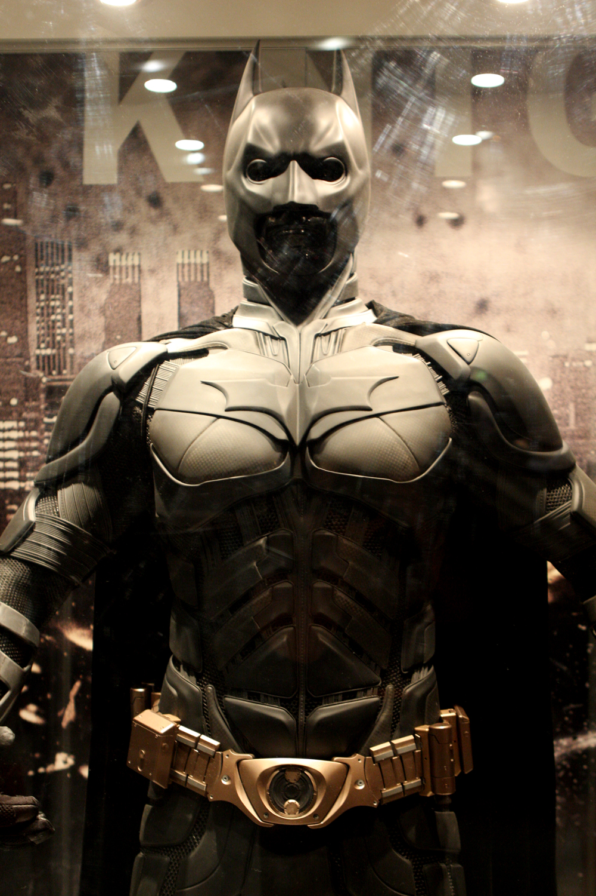

Here are my best movies and tv shows.
THE DARK NIGHT
Might be the best movie I have seen in all time. Heath Ledger playing as the joker was amazing (RIP).
Image: "The Dark Knight Rises" by Eva Rinaldi Celebrity Photographer at https://www.flickr.com/photos/58820009@N05/7590756774, CC BY-SA 2.0.
1917
Masterpiece. The entire movie was mad in one shot. The cinematography was just out of this world.
JOKER
Joaquin Phoenix was the first actor to get to Heath ledgers league. He played the joker flawlessly.

Image: "Poster for Joker starring Joaquin Phoenix" by Ben Sutherland at https://www.flickr.com/photos/60179301@N00/48896109681, CC BY 2.0.